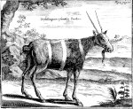
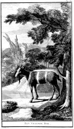

a. Peter Kolb, Caput Bonae Spei hodiernum. Das ist: vollständige Beschreibung
des Africanischen Vorgebürges der Guten Hofnung, [...]. Nürnberg, bey Peter Conrad
Monath, 1719. -- (373 A 12).
b. Peter Kolb, Naaukeurige en uitvoerige beschryving van de Kaap de Goede Hoop,
[...]. Amsterdam, by Balthazar Lakeman, 1727. -- (534 A 1)
Informatie over de vreemde wereld aan de Kaap in het zuiden van Afrika was aan het begin van de achttiende eeuw nog schaars, maar tegelijkertijd in Holland vanwege de belangen van de Oost-Indische Compagnie daar zeer gewenst. Vandaar dat het zeer uitvoerige en rijk geïllustreerde werk van de Duitser Peter Kolb al spoedig een Hollandse uitgave vond. De laatste is nog rijker uitgevoerd dan de oorspronkelijke editie, niet in de laatste plaats doordat de illustraties op grotere platen werden gegraveerd. De voorstelling werd daarbij spiegelbeeldig weergegeven. Bovendien moest het landschap worden aangevuld.
Vergelijking van de twee platen van de zogenaamde vreemde bok, de bok zonder naam zouden wij zeggen (respectievelijk plaat IIb en de plaat tegenover pagina 170), maakt dat duidelijk. Het dier zelf is in de Nederlandse uitgave exact naar het Duitse voorbeeld gereproduceerd. Alleen de poten zijn wat zwaarder getekend. De Duitse uitgave laat zien dat in dit geval nog meer aan de hand is. In het opschrift ‘Vorstellung eines frembden Bockes’ heeft oorspronkelijk ‘blauen’ gestaan, zoals uit andere exemplaren van dezelfde druk blijkt. De vergissing vloeide waarschijnlijk voort uit het feit dat beide diersoorten door Kolb beschreven zijn. De oorspronkelijke platen bleken voor dierkundig onderzoek al weinig betrouwbaar en zijn kennelijk niet zorgvuldig naar de natuur getekend. De illustrator was door het beeld van een geit bevangen. Vandaar dat het tot 1975 zou duren voor de door Kolb gestichte verwarring kon worden opgehelderd. De vreemde bok werd als de koedoe (Tragelaphus strepsiceros, Pallas, 1766) geïdentificeerd; de blaauwbok (Hippotragus leucophaeus, Pallas, 1766) is omstreeks 1800 uitgestorven en alleen nog maar in musea te bestuderen, onder meer in Museum Naturalis te Leiden, waar het exemplaar bewaard wordt waarop de eerste wetenschappelijke typering berust.
Literatuur
A.M. Husson and L.B. Holthuis, ‘The earliest figures of the Blaauwbok, Hippotragus leucophaeus (Pallas, 1766) and of the Greater Kudu, Tragelaphus strepsiceros (Pallas, 1766)’, in: Zoölogische mededelingen uitgegeven door het Rijksmuseum van Natuurlijke Historie te Leiden, 49 (1975-1976), p. 57-63.
| vorige pagina | top pagina |